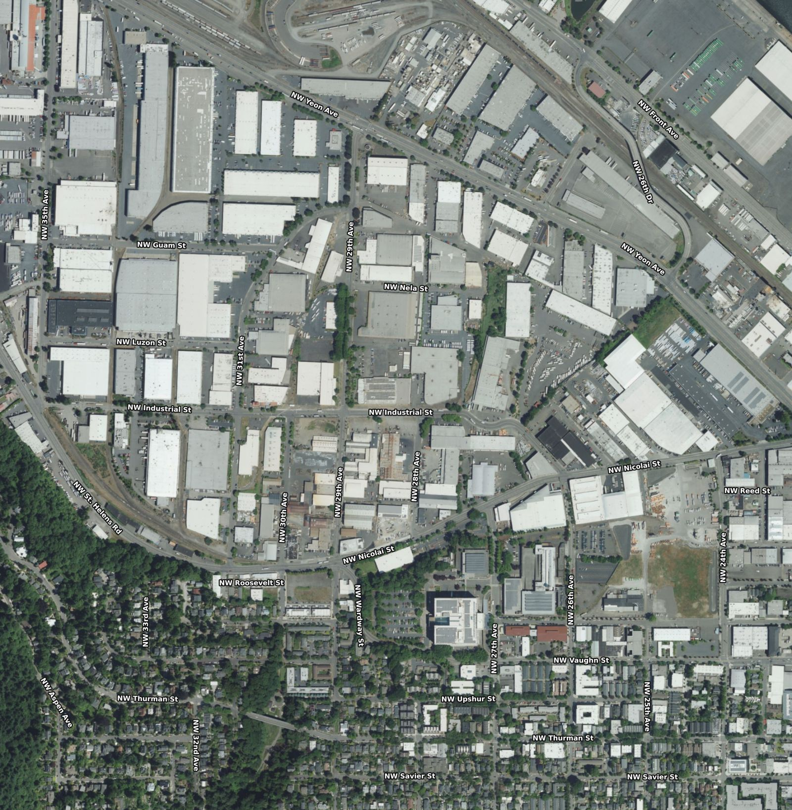
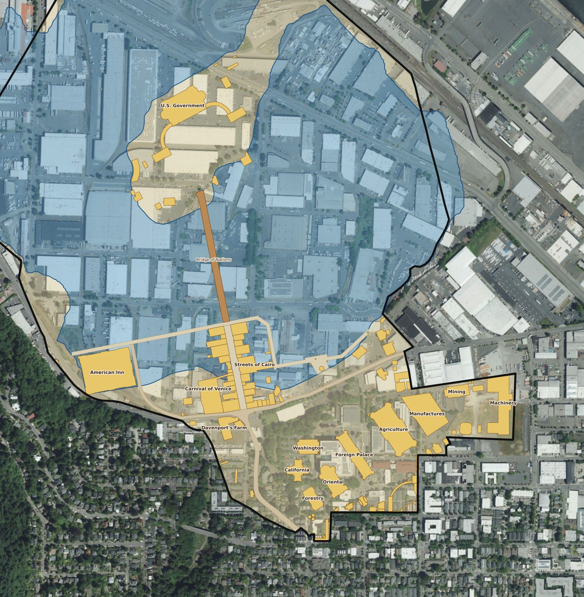

1905Today- Fairgrounds
- Exposition buildings
- Roads and walks
- Bridge of Nations
- Guild's Lake at fair level
- Fence
From lake to fair to industrial district
- 1852Surveyors walk the edge of Guild's Lake, a shallow lake on the Willamette bottomland below the West Hills. An 1883 plat lays city blocks across the water; none are ever built.
- 1902–03Huber & Maxwell survey the lake, and the Olmsted Brothers plan the exposition grounds around it.
- 1905The Lewis and Clark Centennial Exposition. The lake is raised for the summer, the Government Building stands on its peninsula, and the Bridge of Nations crosses the water.
- 1906The palaces are sold for salvage: buildings that cost $290,000 bring $5,525. The lake drains to a mud flat. Lafe Pence buys the grounds and starts sluicing the hills.
- 1909–14Lewis-Wiley washes the hill under Westover Terraces into the lake bed, and subdivisions spread over the hills around the old grounds.
- 1920sThe Port of Portland pumps river silt over the rest of the lake, and the industrial district rises on the fill.
Explore
Coming to this page
Data
Fair buildings
The footprints as a free GeoPackage, with names, concessions and sources.
Model
The fair in 3D
The grounds, the lake and the hills in three dimensions.
Story
The fair and the lake
How a lake nobody wanted became a world's fair, and what the fair set off.